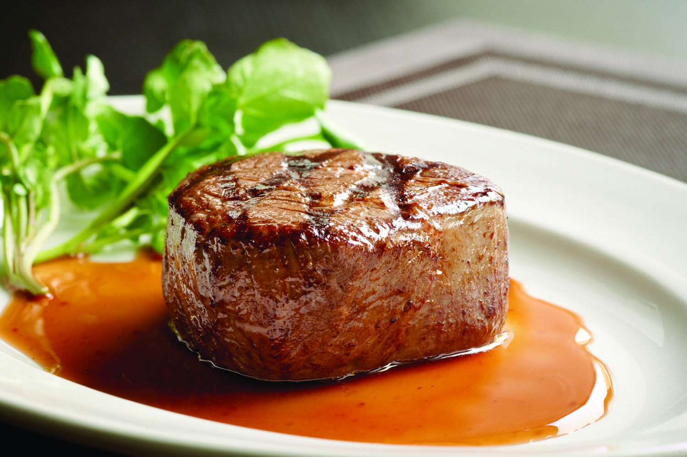

<ion-view view-title="Filet mignon">

    <ion-content class="padding">


        <h1>Filet mignon</h1>

        

        <p class="gras">Temps de préparation : 15 minutes</p>

        <p class="gras">Temps de cuisson : 45 minutes</p>

        <p class="gras">Ingrédients (pour 6 personnes) :</p>

        <ul>
            <li>- 2 filets mignon de porc</li>
            <li>- 2 rouleaux de pâtes feuilletées</li>
            <li>- 4 tranches de jambon blanc</li>
            <li>- 200 g de gruyère râpé</li>
            <li>- 2 gros oignons jaunes</li>
            <li>- 2 jaunes d'oeuf</li>
        </ul><br>

        <p class="gras">Préparation de la recette :</p>

        <p>Peler et émincer les oignons et les faire revenir dans une sauteuse avec 20 g de beurre pendant 3 minutes environ. </p>

        <p>Les retirer de la sauteuse et les réserver.</p>

        <p>Dans la même sauteuse, faire revenir les filets mignons de chaque côté puis laisser cuire 10 minutes à feu doux et réincorporer les oignons.</p>

        <p>Poursuivre la cuisson pendant 5 minutes. Saler, poivrer. Réserver.</p>

        <p>Dérouler les pâtes feuilletées. Déposer sur chaque pâte deux tranches de jambon et 100 g de gruyère. Saler et poivrer.</p>

        <p>Y déposer un filet sur chaque pâte garnie et napper de sauce aux oignons.</p>

        <p>Replier la pâte autour de la viande et souder les bords à l'aide du jaune d'oeuf préalablement battu et d'un pinceau alimentaire.</p>

        <p>Enfourner pour 45 minutes de cuisson à 200°C (thermostat 6-7). </p>


    </ion-content>

</ion-view>